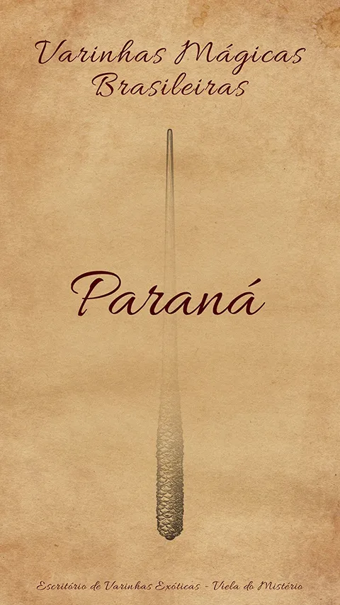
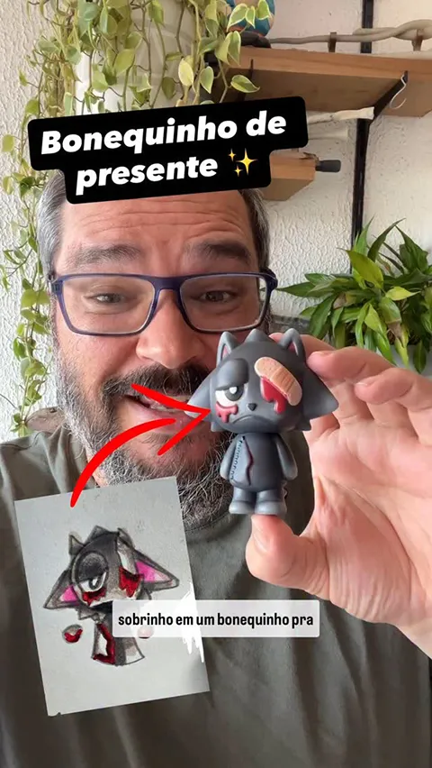
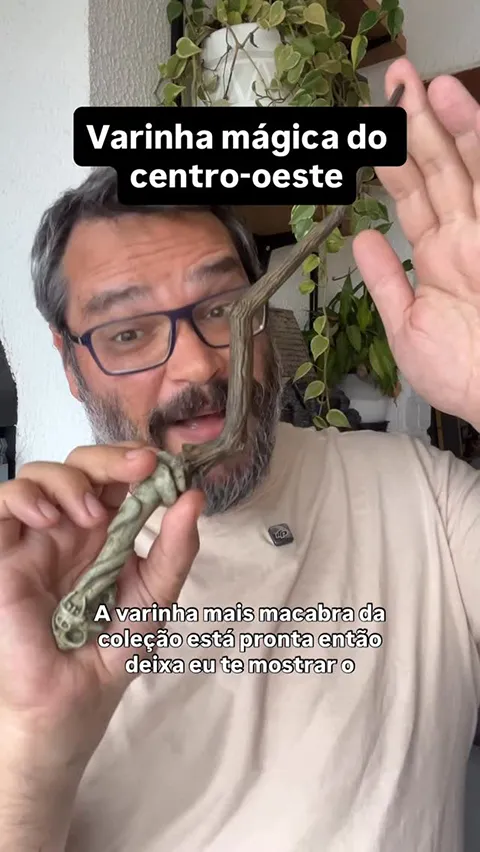
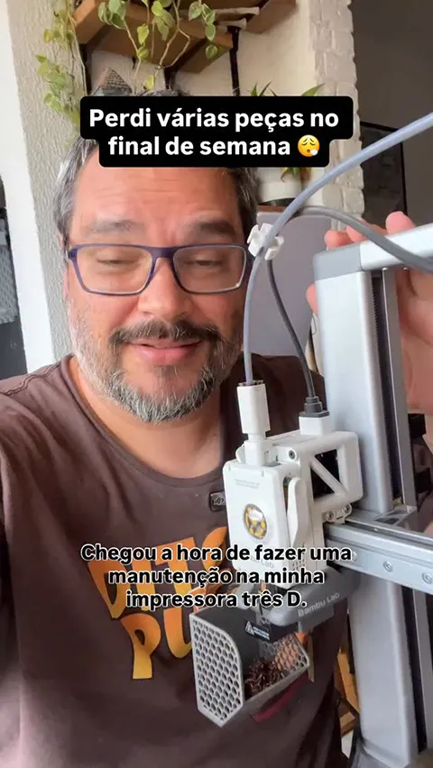

Media
Kit
Sobre mim
Eu sou Kaio Medau, um Maker de Fantasia Brasileiro especializado em transformar conceitos de fantasia, narrativas e worldbuilding em objetos físicos reais — como itens mágicos, props, criaturas fantásticas e dioramas.
No canal e nas minhas plataformas, mostro processos criativos completos, desde a ideação e design até a construção, acabamento e documentação técnica, com foco em artesanato, impressão 3D, pintura e produção física de peças.
O resultado é um universo autoral (Galho Quebrado) que une estética, narrativa e técnica, e conecta marcas, públicos apaixonados por fantasia, RPG e cultura maker com conteúdos autênticos, visuais e educativos.
Números
- Janeiro 2026 148k
- Dezembro 2025 141k
- Novembro 2025 132k
O que estou construindo hoje
Atualmente, estou criando um universo autoral - o Galho Quebrado, onde desenvolvo criaturas fantásticas e artefatos inspirados na fauna, cultura e imaginário brasileiro. Esse universo nasce no digital, por meio de ilustrações e conceitos, e ganha forma no mundo real com a produção de peças físicas.
Meu conteúdo acompanha todo esse processo criativo — das ideias iniciais à execução final — com o objetivo de contar histórias, compartilhar técnicas, explorar materiais e criar uma conexão verdadeira com pessoas que gostam de arte, design e universos fantásticos.
Próximo passo
Meu próximo objetivo é transformar a criação de conteúdo na minha principal atividade profissional, dedicando mais tempo, estrutura e profundidade aos projetos. Quero me aproximar ainda mais da minha comunidade e expandir para conteúdos de formato longo, com projetos mais ambiciosos, narrativas mais ricas e um nível de produção cada vez maior.
Quero me aproximar ainda mais da minha comunidade e expandir para conteúdos de formato longo, com projetos mais ambiciosos.
Alguns Vídeos
Arraste para o lado →



Ideias de parcerias
✦ Patrocínio de vídeos completos
✦ Patrocínio de sessões ou quadros dentro dos vídeos
✦ Inserções de produtos (com ou sem menção direta à marca)
✦ Criação de peças personalizadas para a marca com a documentação completa do processo criativo nas redes sociais.